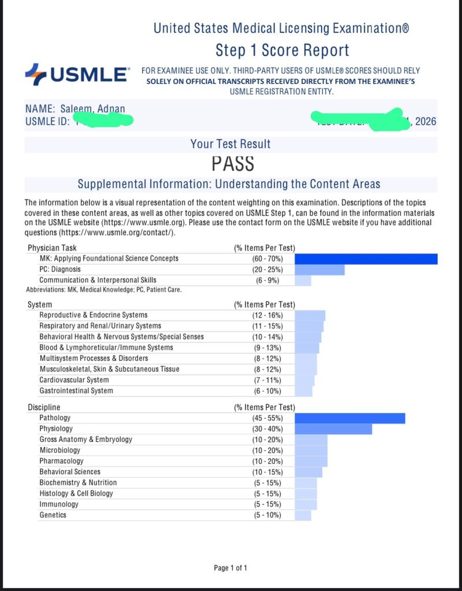
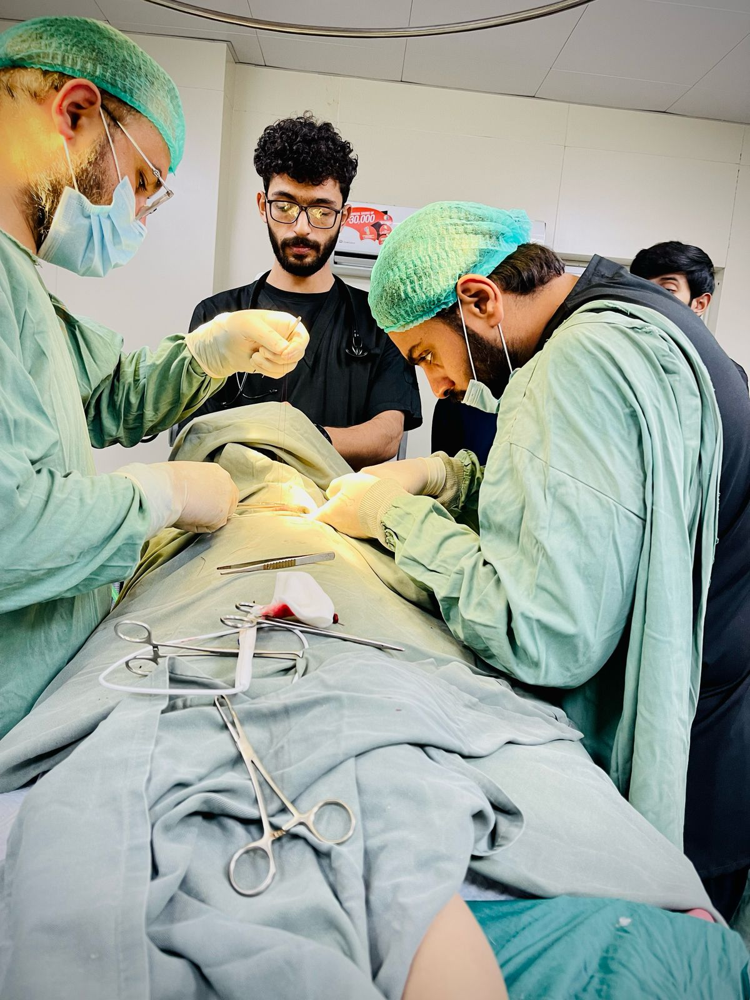
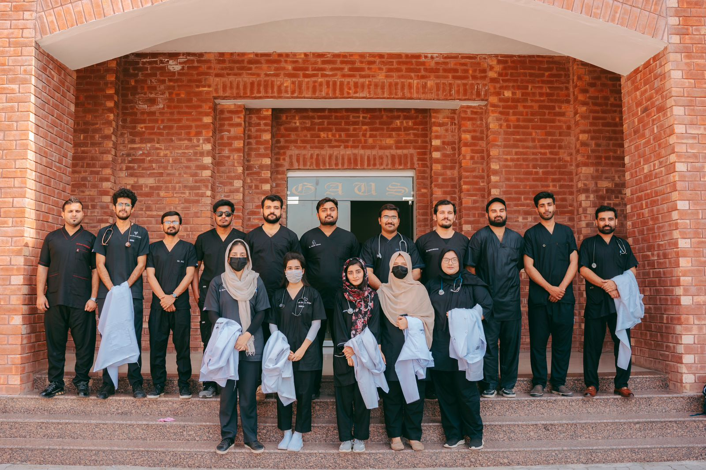
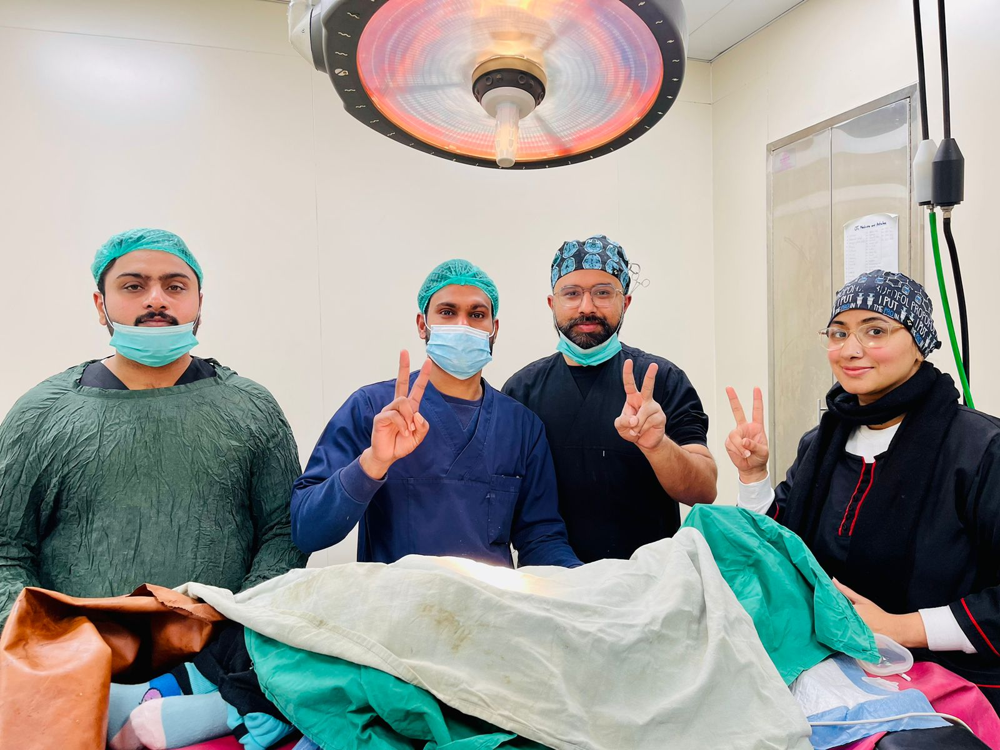

USMLE Step 1 Completed

Successfully completed USMLE Step 1 and strengthened core knowledge in foundational medical sciences.
View Verification"Dedicated to providing compassionate, patient-centered care through continuous learning and hands-on clinical experience."
+92 307 6203976
Dr. Adnan Saleem is a dedicated and compassionate medical professional committed to delivering exceptional patient care. He earned his Bachelor of Medicine, Bachelor of Surgery (MBBS) degree between 2018 and 2023, laying a strong foundation in medical sciences. Currently Completed, Dr. Saleem is undertaking his house job from June 6, 2024, to June 5, 2025, where he is gaining hands-on experience across various medical specialties. His rotations include: General Medicine , General Surgery , Dermatology , and Paediatric Surgery .
These rotations are enhancing his clinical skills and broadening his medical knowledge, preparing him to address a wide range of health concerns with confidence and expertise.
1.50 Years
of Experiences




IMDC is recognized by the Pakistan Medical & Dental Council and affiliated with the University of Health Sciences, Lahore. The college offers top-tier medical programs designed to foster the next generation of healthcare professionals, with a state-of-the-art campus and cutting-edge facilities.
"Completing my house job at Islam Teaching Hospital, affiliated with Islam Medical & Dental College, Sialkot, has been an invaluable journey. The diverse rotations in General Medicine, General Surgery, Dermatology, and Paediatric Surgery have enriched my clinical skills and deepened my commitment to patient-centered care. I am grateful for the mentorship and hands-on experiences that have prepared me for a dedicated career in medicine."
Recognitions, training milestones, and verified certificates that reflect clinical dedication and continuous medical learning.

Successfully completed USMLE Step 1 and strengthened core knowledge in foundational medical sciences.
View VerificationCertified completion of house job rotations in General Medicine, Surgery, Dermatology, and Paediatric Surgery.
Add Certificate Link
Recognized for active contribution to free community health screening and patient support during the pandemic peak.
View CertificateBest Health Care
" Ayesha mentions that Dr. Adnan was patient and provided clear explanations throughout her child’s treatment. The emphasis on ongoing communication and feeling at ease suggests that the treatment is still in progress and she is currently under medical care, benefiting from Dr. Adnan’s continued support."

Doctor cares everyone!
"Ahmed’s testimonial reflects a sense of completion and satisfaction with the medical care he received. He highlights the doctor’s competence and attentiveness, indicating that his health issue was successfully addressed and he is now fully recovered, endorsing Dr. Adnan’s skills with confidence."

Great services!
"Mrs. Shabana’s words express gratitude for the calm and dedicated care provided during a stressful time. This suggests that she is still undergoing treatment or recovery, and Dr. Adnan’s support is helping her manage her health challenges effectively."

Best Advices
"The family’s testimonial specifically mentions the pediatric surgery and praises Dr. Adnan’s compassion and attention to detail. This indicates that the surgery was completed successfully and their child has recovered well, allowing them to acknowledge and appreciate the quality of care received."
Book a consultation with Dr. Adnan Saleem through our Google Calendar system.